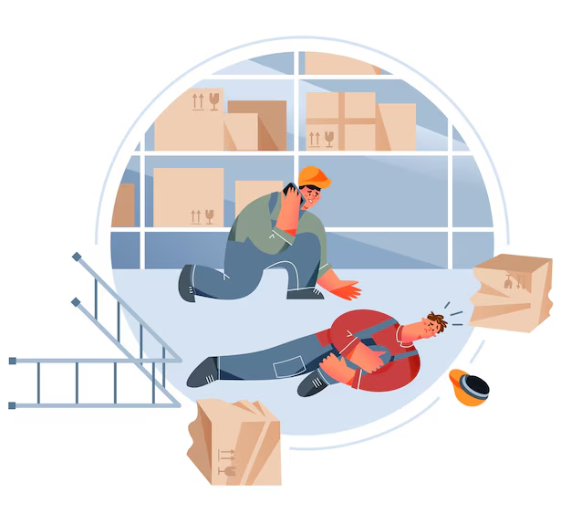
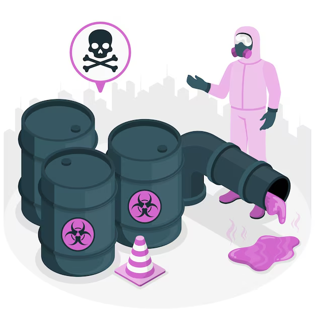
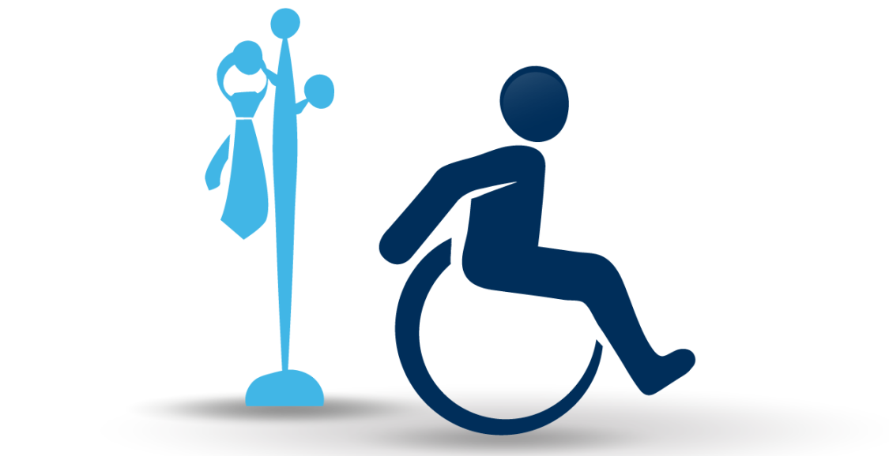
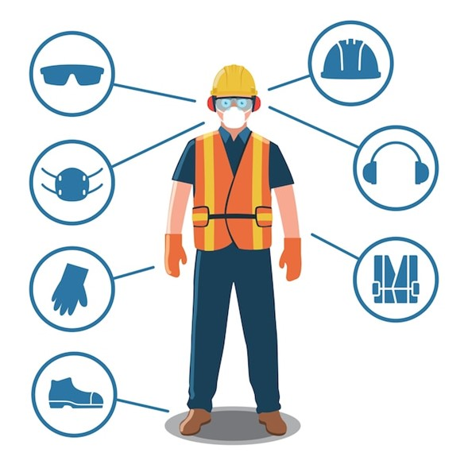

Es un suceso repentino que ocurre durante la realización de una actividad laboral y que causa una lesión física o mental al trabajador. Estos accidentes pueden variar en gravedad, desde lesiones leves hasta accidentes fatales.
Caídas: Tanto a nivel como desde altura, las caídas son una de las principales causas de accidentes en el lugar de trabajo.
Lesiones por esfuerzo repetitivo: Este tipo de lesión ocurre cuando una persona realiza tareas repetitivas durante largos periodos de tiempo sin descanso adecuado.
Golpes con objetos: La caída de objetos o el contacto con herramientas y maquinaria es una fuente común de lesiones en el trabajo.
Exposición a sustancias peligrosas: Contacto con productos químicos o sustancias tóxicas que pueden afectar la salud del trabajador.
Los accidentes laborales no solo afectan la salud del trabajador, sino que también pueden tener un impacto económico significativo tanto para el empleado como para la empresa. Entre las consecuencias más comunes están:
Incapacidad temporal o permanente.
Costos médicos y rehabilitación.
Pérdida de productividad.
Demandas legales o sanciones para la empresa.
Es crucial para las empresas implementar medidas de seguridad en el trabajo para reducir el riesgo de accidentes. Algunas de las principales prácticas de prevención incluyen:
Capacitación continua en seguridad laboral.
Uso adecuado de equipos de protección personal (EPP).
Mantenimiento regular de herramientas y equipos.
Promoción de un entorno de trabajo seguro y ordenado.

Si ocurre un accidente en el lugar de trabajo, es importante seguir los siguientes pasos:
1. Brindar primeros auxilios si es necesario.
2. Si la lesión es grave, el trabajador debe ser trasladado a un centro asistencial que tenga convenio con la ARL de la empresa.
3. Reportar el accidente a los superiores, al área de recursos humanos o el responsable del SG-SST en la empresa
4. Documentar el incidente llenando el Formato Único de Reporte de Accidente de Trabajo (FURAT).
5. Seguir las indicaciones médicas para la recuperación.
La empresa debe mantener un registro de todos los accidentes de trabajo reportados, junto con la documentación correspondiente.